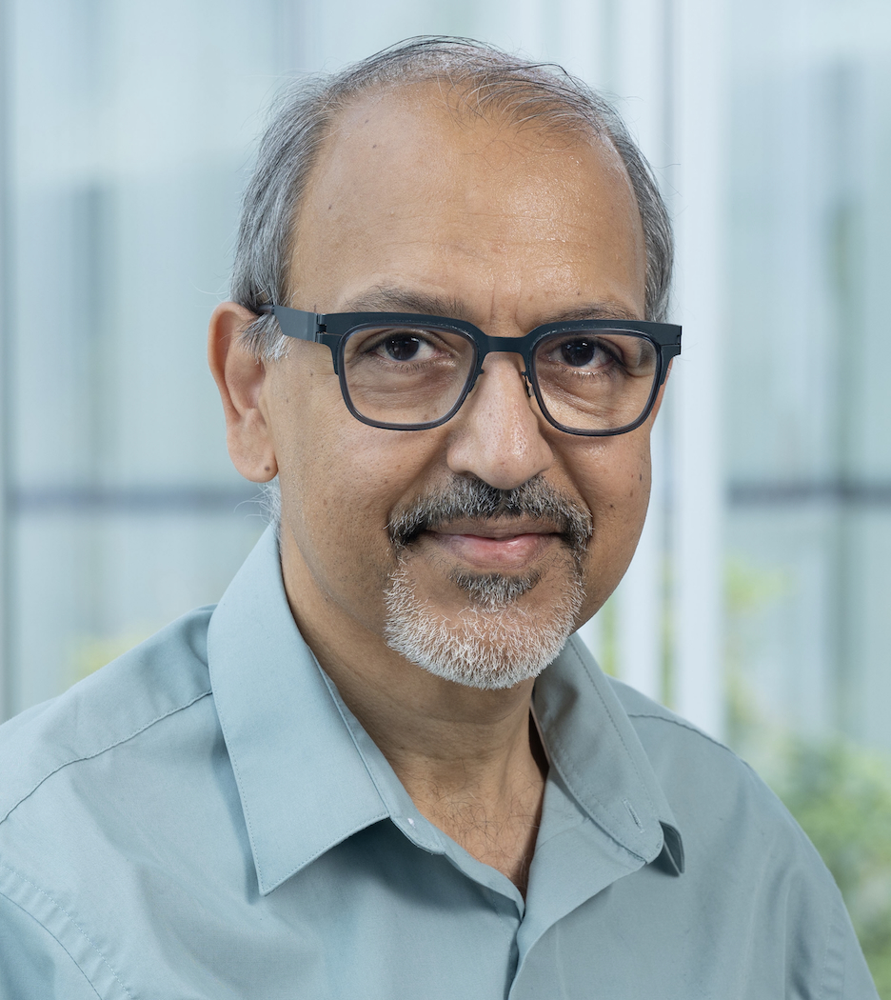

Sanjeev Khanna
Courant Institute School of Mathematics, Computing, and Data Science
New York University
After many wonderful years at Penn CIS, I joined NYU Courant in January 2026.
Announcement
FOCS 2026: The Call for Papers is now available here.
(This posting is provided to avoid delays while the official IEEE conference page is being updated.)
Research Interests
My primary research interests are in the design and analysis of algorithms for combinatorial optimization and in complexity theory. My research has been supported by the National Science Foundation, an Alfred P. Sloan Fellowship, and a Guggenheim Fellowship.
Professional Activities
Program Committees
FOCS 2026 (Program Chair), STOC 2023, FSTTCS 2021, STOC 2020, EC 2018, HALG 2018, APPROX 2017, NETECON 2017, ITCS 2016, STOC 2015, SODA 2013 (Program Chair), EC 2012, STOC 2012, FSTTCS 2011, ICS 2011, COCOON 2010, ICS 2010, SODA 2010, ICDT 2009, SODA 2007, APPROX 2004 (Program Chair), STOC 2003, APPROX 2002, SODA 2002, STOC 2000, APPROX 2000, SWAT 1998.
Editorial Service
Editorial board member of
Journal of the ACM (JACM)
and
Foundations and Trends in Theoretical Computer Science
.
Previously served on the editorial boards of
SICOMP,
ACM TALG,
Algorithmica,
JCSS,
and as an area editor for
Encyclopaedia of Algorithms.
Publications
Some of my papers.
Also: Google Scholar · DBLP
Teaching
Prior to joining NYU, I taught a wide range of undergraduate and graduate courses in algorithms at the University of Pennsylvania, where I was a proud recipient of the S. Reid Warren Jr. Award and the Lindback Award for Distinguished Teaching.
Spring 2026: Randomness and Computation.
Current and Past Students
- Ashwin Padaki
- Krish Singal
- Junkai Song
- Nathan White
- Huan Li (Renaissance Technologies)
- Prathamesh Patil
- Yu Chen (National University of Singapore)
- Sepehr Assadi (University of Waterloo)
- Yang Li (Facebook)
- Sudeepa Roy (Duke University)
- Tanmoy Chakraborty (Facebook)
- Anand Bhalgat (Google)
- Stanislav Angelov (Google)
- Wang-Chiew Tan (Facebook)
Postdocs Supervised
- Grigory Yaroslavtsev (George Mason University)
- Deeparnab Chakrabarty (Dartmouth College)
- Julia Chuzhoy (Toyota Technological Institute, Chicago)